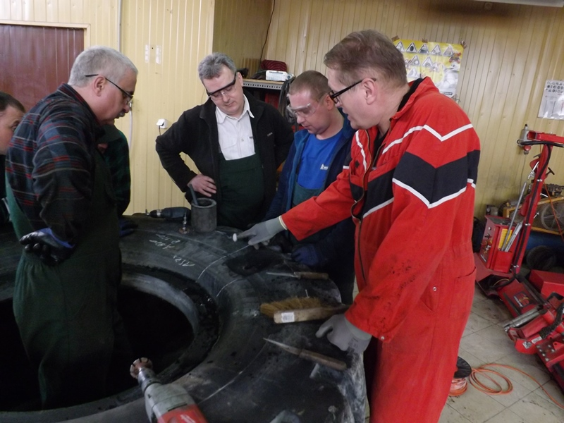
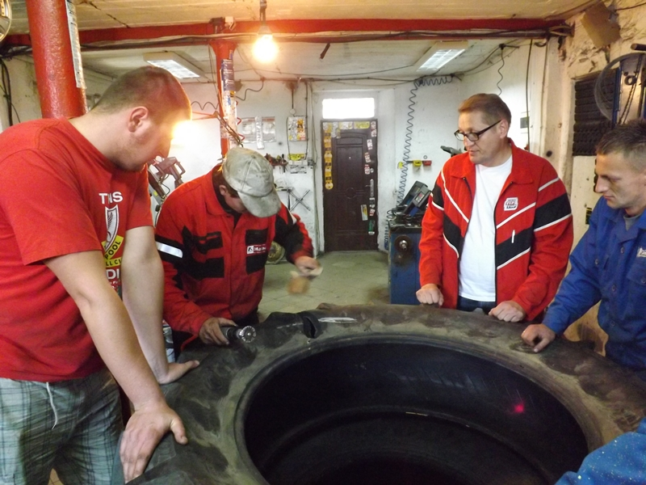

Zakres usług
Szkolenia z napraw opon wszystkich typów realizowane na miejscu w Twoim serwisie. Oferuję m.in.:

Naprawa opon wszystkich typów
Szkolenia stanowiskowe w zakresie obsługi urządzeń do wulkanizacji na
gorąco
Szkolenia w zakresie montażu i wyważania kół
Szkolenia TPMS
Weryfikacja opon i pogłębianie rzeźby bieżnika
Szkolenia dla serwisów oponiarskich

Weryfikacja karkasów do bieżnikowania
Szkolenia w zakresie napraw opon możliwych do wykonania w
procesie bieżnikowania
Szkolenia dla pracowników zakładów bieżnikowania opon

Szkolenia dla serwisów ASO

Konsultacje i doradztwo techniczne
Wszystkie szkolenia obejmują część teoretyczną i
praktyczną. W części praktycznej istnieje możliwość wykonania napraw
uszkodzeń w oponach przeznaczonych do eksploatacji. Uczestnicy szkoleń
otrzymują stosowne zaświadczenia potwierdzające zdobyte kwalifikacje.